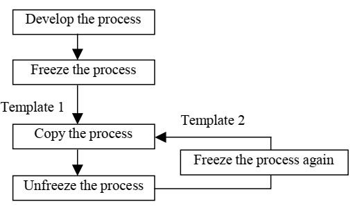
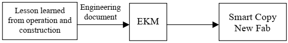
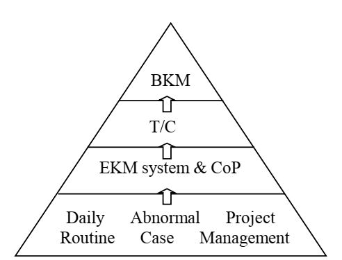

An interactive reference that maps how a 28 nm wafer foundry is brought up through Technology Transfer — the IP, the engineering responsibilities, the project phase flow (P0→P3), the underlying fab work flow (FW1→FW5), and the specific fab processes engineers execute along the way. Use the outline on the left to open any section; click any phase block, matrix cell, or IP card to expand its detail in place.
This handbook brings together two complementary views of the same programme. The Technology Transfer phase flow (P0→P3) describes what the transfer project executes and in what order. The Fab Work Flow (FW1→FW5) describes the underlying foundry development work that the transfer compresses — what a foundry would otherwise have to develop internally from scratch. Around these two flows sit the Engineer Responsibility Matrix (what each of the 8 engineer groups does in each phase) and the IP Distribution Map (157 IP items across 9 domains).
A separate knowledge base, Specific Processes in Fab, collects standalone technical articles covering individual processes, methods, and workflow steps an engineer encounters — from process characterization and DOE through qualification, yield learning, and customer release.
Trang khái quát toàn bộ dòng chảy chuyển giao công nghệ của dự án, từ chuẩn bị (P0) đến sản phẩm đạt chuẩn và HVM (P3). Sơ đồ bên dưới là bản đồ tổng thể; nhấp vào một phase bất kỳ (trên sơ đồ hoặc trong menu bên trái) để mở chi tiết phase đó ngay dưới phần khái quát.
Chương trình chuyển giao được chia thành 4 giai đoạn nối tiếp. P0 đặt nền móng và — quan trọng nhất — chốt cứng phân hạng (tier) của toàn bộ 157 IP item theo hợp đồng. P1 là giai đoạn nặng nhất, chạy đồng thời ba luồng song song để rút ngắn tổng thời gian. P2 chứng minh quy trình trên silicon thật qua test vehicle và đạt mốc yield 60%. P3 đưa sản phẩm tới mức đạt chuẩn (qualified) và năng lực sản xuất khối lượng lớn với yield ≥ 80%.
Đặc trưng then chốt của khung này là ba luồng P1 chạy song song thay vì tuần tự: luồng chuyển giao công nghệ (P1-TT), luồng mua sắm thiết bị & vật tư (P1-EM), và luồng xây dựng nhà máy (P1-CB). Chính sự song song này là yếu tố giúp Technology Transfer nén thời gian so với việc một foundry tự phát triển từ đầu.
Dựa trên nghiên cứu các công ty hàng đầu như Intel, TSMC, UMC và ASE, có 3 mô hình chính được xác định tồn tại trong lĩnh vực sản xuất chip bán dẫn.
Trong mô hình này, một template hoặc best practice được phát triển tại một đơn vị nguồn và sau đó được sao chép sang các đơn vị khác. Intel là ví dụ điển hình với phương pháp Copy Exactly! (CE), trong đó mọi yếu tố ảnh hưởng đến quá trình sản xuất như thiết bị, nguyên vật liệu, quy trình và thông số vận hành đều phải được sao chép gần như tuyệt đối. Mục tiêu là đảm bảo các wafer fab mới đạt được cùng mức yield, quality và tốc độ ramp-up như fab phát triển ban đầu.

Mô hình này tổng hợp best practices từ nhiều nguồn khác nhau, sau đó sàng lọc, chuẩn hóa và chuyển giao cho đơn vị nhận. TSMC áp dụng phương pháp Smart Copy (SC) bằng cách thu thập lessons learned từ các dự án xây dựng và vận hành fab trước đó, lưu trữ trong các knowledge management systems như EKM để hỗ trợ các dự án mới.

Mô hình này dựa trên sự tương tác liên tục giữa nhiều đơn vị thông qua Communities of Practice (CoP), Technical Boards (T/B) và các chương trình continuous improvement. Các fab chia sẻ kinh nghiệm, cải tiến quy trình và xây dựng các Best Known Methods (BKM) được áp dụng trên toàn doanh nghiệp.

Kết quả nghiên cứu cho thấy không tồn tại một mô hình tối ưu cho mọi trường hợp. Việc lựa chọn giữa C-model, B-model hay I-model phụ thuộc vào cấu trúc tổ chức, mức độ phân tán nguồn lực và mục tiêu quản trị của doanh nghiệp. Việc khai thác hiệu quả internal knowledge và best practices có thể tạo ra lợi thế cạnh tranh bền vững hơn so với chỉ dựa vào external benchmarking.
What each of the 8 engineer groups does in each TT phase, with the IP they touch by tier. Click any cell to expand its description, key tasks, references, and IP know-how below the table.
The 5-phase process a foundry would otherwise develop internally from scratch, which Technology Transfer compresses. External IP streams (Design / Product Engineering / Mask) run in parallel. Click any block, external stream, or DTCO loop for full detail below.
All 157 IP items organised across 9 domains and 3 IP layers. Click a domain card to list its IP items, then click any IP card to open its full definition, purpose, characteristics, transfer form, and the Fab Work Flow phase that produces it.